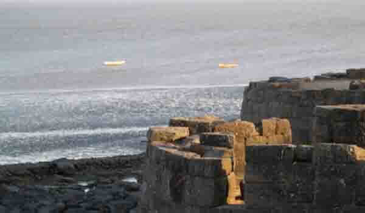

कोकणातील समुद्रकिनारा सहलीचा अर्थ म्हणजे निर्मळपणाचे अनुभव, न उलगडलेले सौंदर्य, सनसेट आणि स्वादिष्ट सीफूड. अलिबाग बीच काही वेगळा नाही. हे सर्वात चांगले ठिकाण आहे, आपल्या सुट्टीसाठी एक परिपूर्ण गंतव्य आहे. या ठिकाणी भेट देण्याचा आणखी एक फायदा हा आहे की आपण ऐतिहासिक किल्ले, मंदिरे आणि जवळच असलेल्या एक-मनुष्य क्युरेटेड संग्रहालयात भेट देऊ शकता.
खूप लांब फिरा, लहरींसह खेळण्याचा आनंद घ्या, सूर्यास्ताने मोहित व्हा आणि स्थानिक पाककृतींचा आस्वाद घ्या. समुद्रकिनारा स्वच्छ आणि वाळू काळ्या रंगाचा आहे. इतर कोकण किनार्यांपेक्षा थोडी गर्दी आहे परंतु तरीही आपल्याला एक वैयक्तिक स्थान देते. आपल्या संपूर्ण कुटुंबासह आनंद घेण्यासाठी हे ठिकाण आहे. मुलांना समुद्राची आणि या ठिकाणच्या भोवतालच्या पाण्याचे खेळ आवडतील. एक बनाना राइड, पॅरासेलिंग, घोडा चालविणे, दुचाकी चालविणे आणि उंट चालविणे यासारख्या पाण्याचे खेळ घेऊ शकते.
समुद्रकिनार्यावर खाद्यपदार्थांची असंख्य स्टॉल्स आहेत. आपण समुद्रकिनारीच चवदार भेल पुरी, शेव, सीफूड आणि कच्चा आंबा खाऊ शकता. किनारपट्टीच्या जवळपासचे क्षेत्र हे नारळ, आंबा, जॅकफ्रूट आणि इतर झाडाच्या लागवडीपासून वसलेले आहे. आजूबाजूला जंगलाचे दाट आवरण देखील आहे.
कोलाबा किल्ला समुद्रकाठूनच दिसतो. हे समुद्रकाठपासून फक्त १ किंवा २ कि.मी. अंतरावर आहे. अलिबागच्या भेटीत तुम्ही आणखी एका ठिकाणी भेट दिली पाहिजे ती म्हणजे श्री विक्रम विनायक मंदिर. हे मंदिर गणेशाला समर्पित आहे.
समुद्रकिनारा आणि त्याच्या आसपासच्या आकर्षणे पाहण्याचा उत्तम काळ म्हणजे सप्टेंबर ते मे. हवामान चांगले असते आणि यावेळी आपण बोटिंग आणि वॉटर स्पोर्ट क्रियाकलापांसारख्या सर्व सुविधांचा लाभ घेऊ शकता.